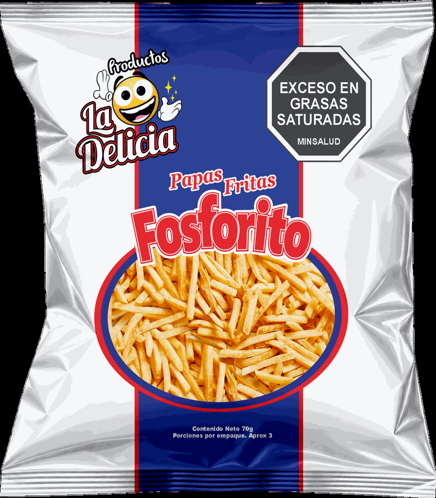

Aplica a los sabores marcados docena. Entre más docenas lleve, menos paga por cada una. Las que se venden por unidad tienen su propia escala, anotada en cada tarjeta.
Marca las cantidades y al final te abrimos WhatsApp con el pedido escrito. El precio por docena se ajusta solo según el total.
Apúntale la cámara del celular y se abre el catálogo. Deja la imagen pulsada para guardarla o mandarla.